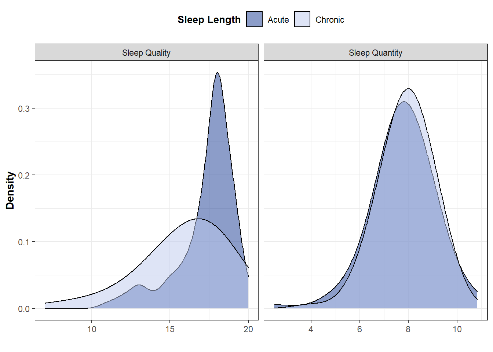
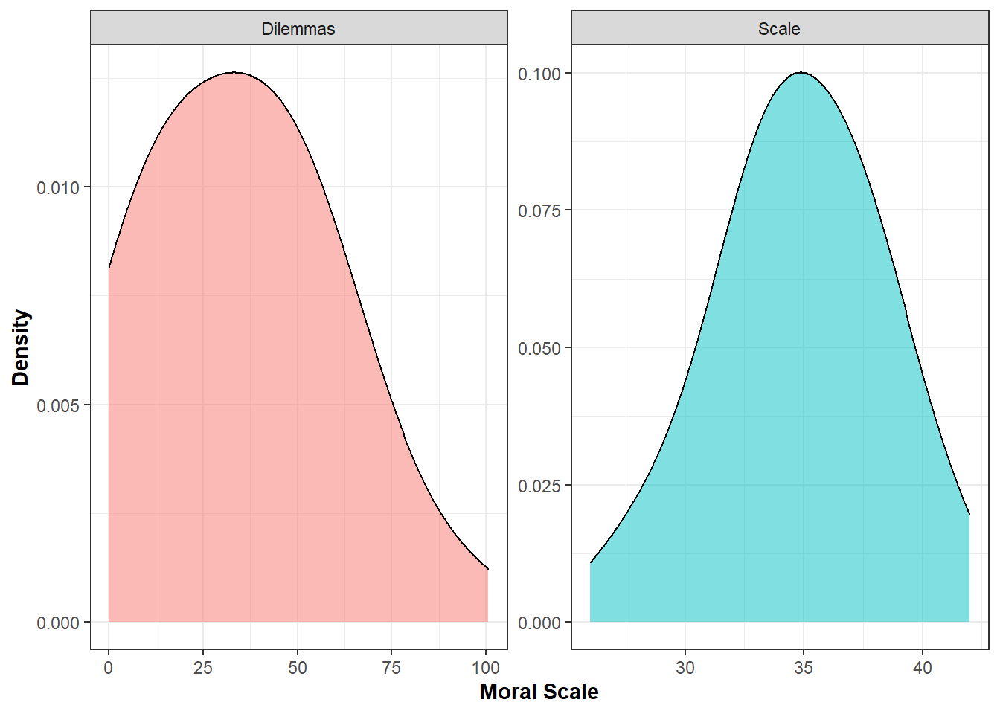
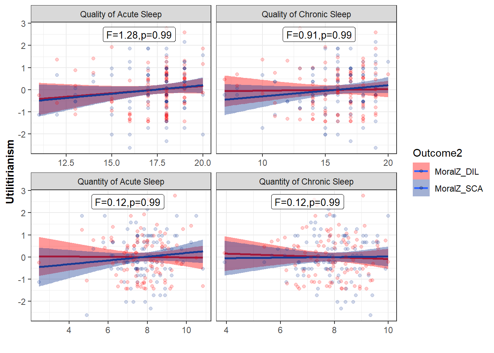

6 Study 6
Data_Study6_Wide<-Data_Meta_Raw.wide[Data_Meta_Raw.wide$Study==6,]6.1 Data analysis
Run a multivariate regression for each sleep variable (IV) on endorsement of moral principles assessed using moral dilemmas and a moral scale as DVs
QualCroLMS6<-lm(cbind(Moral_DIL, Moral_SCA)~SleepQualCro,Data_Study6_Wide)
QualAcuLMS6<-lm(cbind(Moral_DIL, Moral_SCA)~SleepQualAcu,Data_Study6_Wide)
QuantCroLMS6<-lm(cbind(Moral_DIL, Moral_SCA)~SleepQuantCro, Data_Study6_Wide)
QuantAcuLMS6<-lm(cbind(Moral_DIL, Moral_SCA)~SleepQuantAcu, Data_Study6_Wide)Extract coefficients (F test and p-values) from multivariate regression models
out <- car:::print.Anova.mlm
body(out)[[16]] <- quote(invisible(tests))
body(out)[[15]] <- NULL
#Chronic Sleep Quality
FQualCroS6<-round(do.call(rbind, out(Anova(QualCroLMS6, test.statistic="Pillai")))[3], digit=2)
pQualCroS6<- round(ifelse(do.call(rbind, out(Anova(QualCroLMS6, test.statistic="Pillai")))[6]*4<.99, do.call(rbind, out(Anova(QualCroLMS6, test.statistic="Pillai")))[6]*4, .99), digit=2)
#Acute Sleep Quality
FQualAcuS6<-round(do.call(rbind, out(Anova(QualAcuLMS6, test.statistic="Pillai")))[3], digit=2)
pQualAcuS6<- round(ifelse(do.call(rbind, out(Anova(QualAcuLMS6, test.statistic="Pillai")))[6]*4<.99, do.call(rbind, out(Anova(QualAcuLMS6, test.statistic="Pillai")))[6]*4, .99), digit=2)
#Chronic Sleep Quantity
FQuantCroS6<-round(do.call(rbind, out(Anova(QuantCroLMS6, test.statistic="Pillai")))[3], digit=2)
pQuantCroS6<- round(ifelse(do.call(rbind, out(Anova(QuantCroLMS6, test.statistic="Pillai")))[6]*4<.99, do.call(rbind, out(Anova(QuantCroLMS6, test.statistic="Pillai")))[6]*4, .99), digit=2)
#Acute Sleep Quantity
FQuantAcuS6<-round(do.call(rbind, out(Anova(QuantCroLMS6, test.statistic="Pillai")))[3], digit=2)
pQuantAcuS6<- round(ifelse(do.call(rbind, out(Anova(QuantAcuLMS6, test.statistic="Pillai")))[6]*4<.99, do.call(rbind, out(Anova(QuantAcuLMS6, test.statistic="Pillai")))[6]*4, .99), digit=2)Create datasets to display regression summary in plots
ResumQualCroS6<- paste0("F=",FQualCroS6,",","p=",pQualCroS6)
ResumQualAcuS6<- paste0("F=",FQualAcuS6,",", "p=",pQualAcuS6)
ResumQuantCroS6<- paste0("F=",FQuantCroS6,",","p=",pQuantCroS6)
ResumQuantAcuS6<- paste0("F=",FQuantAcuS6,",","p=",pQuantAcuS6)
annotationQualCroS6 <- data.frame(x = 14.5, y = 2.5, label = ResumQualCroS6)
annotationQualAcuS6 <- data.frame(x = 16.5, y = 2.5, label = ResumQualAcuS6)
annotationQuantCroS6 <- data.frame(x =7, y = 2.5, label = ResumQuantCroS6)
annotationQuantAcuS6 <- data.frame(x = 7, y = 2.5, label = ResumQuantAcuS6)
annotationS6<-cbind(
rbind(annotationQualCroS6,
annotationQualAcuS6,
annotationQuantCroS6,
annotationQuantAcuS6),
SleepType=c(
"Quality of Chronic Sleep",
"Quality of Acute Sleep",
"Quantity of Chronic Sleep",
"Quantity of Acute Sleep"))Prepare data for plots
Data_PlotS6<- Data_Study6_Wide %>%
pivot_longer(
cols=c(SleepQualCro, SleepQualAcu, SleepQuantCro, SleepQuantAcu),
names_to="SleepType") %>%
rename("SleepValue"=value) %>%
mutate(
SleepLength=case_when(
SleepType=="SleepQualCro" | SleepType=="SleepQuantCro"~"Chronic",
SleepType=="SleepQualAcu" | SleepType=="SleepQuantAcu"~"Acute"),
SleepQuanthist=case_when(
SleepType=="SleepQualCro" | SleepType=="SleepQualAcu"~"Sleep Quality",
SleepType=="SleepQuantCro" | SleepType=="SleepQuantAcu"~"Sleep Quantity"),
MoralZ_DIL=scale(Moral_DIL, center = TRUE, scale = TRUE),
MoralZ_SCA=scale(Moral_SCA, center = TRUE, scale = TRUE))
Data_PlotS6$SleepType<-dplyr::recode(Data_PlotS6$SleepType,
"SleepQualCro" = "Quality of Chronic Sleep",
"SleepQualAcu" = "Quality of Acute Sleep",
"SleepQuantCro" = "Quantity of Chronic Sleep",
"SleepQuantAcu" = "Quantity of Acute Sleep")
Data_MoralS6<- Data_Study6_Wide %>%
pivot_longer(
cols=c(Moral_DIL, Moral_SCA),
names_to="Outcome_moral") %>%
rename("MoralValue"=value)
Data_MoralS6$Outcome_moral<-dplyr::recode(Data_MoralS6$Outcome_moral,
"Moral_DIL" = "Dilemmas",
"Moral_SCA" = "Scale")
Data_ScatterS6<- Data_PlotS6 %>%
pivot_longer(
cols=c(MoralZ_DIL, MoralZ_SCA),
names_to="Outcome2") %>%
rename("MoralValue2"=value)
Data_ScatterS6$Outcome<-dplyr::recode(Data_ScatterS6$Outcome,
"MoralZ_DIL" = "Dilemmas",
"MoralZ_SCA" = "Scale")N in each sleep quantity category
Data_Study6_Wide$SleepQuantCroR<-round(Data_Study6_Wide$SleepQuantCro)
Data_Study6_Wide$SleepQuantAcuR<-round(Data_Study6_Wide$SleepQuantAcu)
Dist.Quantity.ChronicS6<-Data_Study6_Wide %>%
dplyr::group_by(SleepQuantCroR) %>%
summarise(
N=n()) %>%
spread(SleepQuantCroR, N) %>%
as.data.frame()## `summarise()` ungrouping output (override with `.groups` argument)row.names(Dist.Quantity.ChronicS6)<-"Quantity Chronic"
Dist.Quantity.AcuteS6<-Data_Study6_Wide %>%
dplyr::group_by(SleepQuantAcuR) %>%
summarise(
N=n()) %>%
spread(SleepQuantAcuR, N) %>%
as.data.frame()## `summarise()` ungrouping output (override with `.groups` argument)row.names(Dist.Quantity.AcuteS6)<-"Quantity Acute"
bind_rows(Dist.Quantity.AcuteS6, Dist.Quantity.ChronicS6)## 2 5 6 7 8 9 10 11 4
## Quantity Acute 1 3 9 21 40 18 6 1 NA
## Quantity Chronic NA 1 6 25 40 21 5 NA 16.2 Summary of Study 6 results
Put results in a table
SleepMarker<-c("Quality Chronic","Quality Acute","Quantity Chronic","Quantity Acute")
FS6<-c(FQualCroS6,FQualAcuS6,FQuantCroS6,FQuantAcuS6)
pvalS6<-c(pQualCroS6,pQualAcuS6,pQuantCroS6,pQuantAcuS6)
NS6<-c(length(QualCroLMS6$fitted.values)/2,
length(QualAcuLMS6$fitted.values)/2,
length(QuantCroLMS6$fitted.values)/2,
length(QuantAcuLMS6$fitted.values)/2)
ResultsStudy6<-data.frame("Sleep Indicator"=SleepMarker, "F-test"=FS6, "p values"=pvalS6, "N"=NS6)
gt(ResultsStudy6)| Sleep.Indicator | F.test | p.values | N |
|---|---|---|---|
| Quality Chronic | 0.91 | 0.99 | 99 |
| Quality Acute | 1.28 | 0.99 | 99 |
| Quantity Chronic | 0.12 | 0.99 | 99 |
| Quantity Acute | 0.12 | 0.99 | 99 |
6.3 Plots of Study 6 results
Plot distribution for each sleep indicator
DistQualityS6<-ggplot(Data_PlotS6, aes(x=SleepValue, fill=factor(SleepLength))) +
geom_density(alpha=0.5, size=0.5,adjust = 2) +
scale_fill_manual(values=c("#193B94", "#BDCAEE")) +
theme_bw() +
ylab("Density") + xlab("") +
facet_wrap(~factor(SleepQuanthist), scale="free_x") +
guides(fill=guide_legend("Sleep Length")) +
theme(
axis.title.y = element_text(size = 11, hjust = 0.5, face="bold"),
axis.title.x = element_text(face="bold", size = 11, hjust = 0.5),
legend.position="top",
legend.title = element_text(colour="black", size=10, face="bold"))
DistQualityS6
Plot distribution for the scores to the dilemmas and moral scale
DistMoralS6<-ggplot(Data_MoralS6, aes(x=MoralValue, fill=factor(Outcome_moral))) +
geom_density(alpha=0.5, size=0.5,adjust = 2) +
theme_bw() +
ylab("Density") + xlab("Moral Scale") +
facet_wrap(~factor(Outcome_moral), scale="free") +
guides(fill="none") +
theme(
axis.title.y = element_text(size = 11, hjust = 0.5, face="bold"),
axis.title.x = element_text(face="bold", size = 11, hjust = 0.5))
DistMoralS6
Scatterplots
ggplot(Data_ScatterS6, aes(x=SleepValue, y=MoralValue2,
color=Outcome2, fill=Outcome2)) +
geom_smooth(method="lm")+
geom_point(alpha=0.2)+
facet_wrap(~factor(SleepType), scales="free_x") +
theme_bw() + ylab("Utilitirianism") + xlab("") +
theme(axis.title.y = element_text(size = 11, hjust = 0.5, face="bold"),
axis.title.x = element_text(face="bold", size = 11, hjust = 0.5)) +
guides(size=FALSE, colour=FALSE) +
scale_fill_manual(values=c("red","#193B94"))+
scale_color_manual(values=c("red","#193B94"))+
geom_label(data=annotationS6, aes( x=x, y=y, label=label),
color="black", size=3.5 , angle=45, alpha=7/10,
inherit.aes = FALSE)## `geom_smooth()` using formula 'y ~ x'